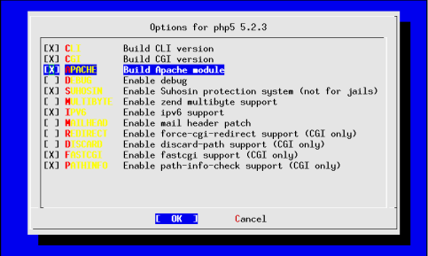

1.3. Apache mit php5 installieren¶
Alle Programme in diesem Artikel werden mit ports-mgmt/portupgrade installiert, welches nicht Bestandteil des FreeBSD-Basis-Systems ist. Weiter Information enthält der Artikel portupgrade.
Dieser Artikel beschreibt die Installation des populären Webservers www/apache2 mit lang/php5-Modulen.
1.3.1. Installation von Apache¶
Die Installation von Apache2 wird einfach mit
# portinstall apache2
gestartet.
Um zu sehen, ob Apache2 schon funktioniert, kann man Apache2 mit der normalen Default-Konfiguration starten und schauen, ob er auf Port 80 Antwort gibt:
# apachectl start
Jetzt kann in einem Web-Browser die IP-Adresse des Servers eingeben werden und die Apache Default-Seite sollte erscheinen.
1.3.2. Installation von PHP5¶
Bei der ersten Installation von php5 wird die unten abgebildete Maske angezeigt, bei der man angeben kann, welche Module zu php5 installiert werden sollen. Im Prinzip können die Default-Einstellungen übernommen werden. Wichtig ist die Einstellung [X] APACHE Build Apache Module. Dieser Eintrag muß aktiviert werden.

Die Einstellungen, welche Module zu php5 installiert werden, wird unter „options“ im Verzeichnis /var/db/ports/php5/ gespeichert.
Später können die Einstellungen auch mittels
# make config
geändert werden. Nach jeder Änderung ist der Port allerdings auch neu zu kompilieren. Mit
# make rmconfig
kann die Default-Einstellung des Systems wieder hergestellt werden.
Mir ist es schon passiert, dass dieses File plötzlich weg war und beim upgraden von php5 plötzlich Module fehlten. Deshalb tut man sich gut darin, dieses File zu backupen. Mein options File sieht folgendermassen aus:
vi /var/db/ports/php5/options
_OPTIONS_READ=php5-5.0.3_1
WITH_APACHE2=true
WITHOUT_DEBUG=true
WITH_IPV6=true
WITH_BCMATH=true
WITH_BZ2=true
WITH_CALENDAR=true
WITH_CURL=true
WITH_FILEINFO=true
WITH_FTP=true
WITH_GD=true
WITH_GETTEXT=true
WITH_GMP=true
WITH_IMAGICK=true
WITH_IMAP=true
WITH_LDAP=true
WITH_MCRYPT=true
WITH_MCVE=true
WITH_MHASH=true
WITH_MING=true
WITH_MNOGOSEARCH=true
WITH_MYSQL=true
WITH_NCURSES=true
WITH_OPENSSL=true
WITH_PCRE=true
WITH_PDF=true
WITH_POSIX=true
WITH_PSPELL=true
WITH_SESSION=true
WITH_SNMP=true
WITH_SOCKETS=true
WITH_SYSVMSG=true
WITH_SYSVSEM=true
WITH_SYSVSHM=true
WITH_TIDY=true
WITH_TOKENIZER=true
WITH_WDDX=true
WITH_XML=true
WITH_ZIP=true
WITH_ZLIB=true
>wq
Ist das options-File vorhanden, kann php5 ganz normal installiert werden:
# cd /usr/ports/lang/php5
# portinstall $PWD
1.3.3. Konfiguration von httpd.conf¶
Die Datei /usr/local/etc/apache2/httpd.conf enthält die Konfiguration von Apache2. Viele Leute behalten die default-Einstellungen drin, was nicht empfehlenswert ist. Apache2 gibt mit diesen Einstellungen sehr viele Informationen an potenzielle Hacker heraus. Deshalb ist es am vernünftigsten, seine Apache2-Konfiguration klein zu halten und alles überflüssige über Bord zu werfen.
# =================================================
# Basic settings
# =================================================
ServerRoot "/usr/local"
PidFile /var/run/httpd.pid
# =================================================
# Performance settings
# =================================================
Timeout 300
KeepAlive On
MaxKeepAliveRequests 100
KeepAliveTimeout 15
<IfModule prefork.c>
StartServers 5
MinSpareServers 5
MaxSpareServers 10
MaxClients 150
MaxRequestsPerChild 0
</IfModule>
# =================================================
# General settings
# =================================================
Listen 80
User www
Group www
ServerAdmin webmaster@whatever.com
UseCanonicalName On
ServerSignature Off
HostnameLookups On
ServerTokens Prod
DocumentRoot "/data/www/lowfat.fat/www"
DirectoryIndex index.html index.html.var index.htm index.php
# =================================================
# Modules to be included
# =================================================
# Notwendige Module, die wir benötigen
LoadModule access_module libexec/apache2/mod_access.so
LoadModule auth_module libexec/apache2/mod_auth.so
LoadModule include_module libexec/apache2/mod_include.so
LoadModule log_config_module libexec/apache2/mod_log_config.so
LoadModule mime_magic_module libexec/apache2/mod_mime_magic.so
LoadModule mime_module libexec/apache2/mod_mime.so
LoadModule status_module libexec/apache2/mod_status.so
LoadModule cgi_module libexec/apache2/mod_cgi.so
LoadModule dir_module libexec/apache2/mod_dir.so
LoadModule userdir_module libexec/apache2/mod_userdir.so
LoadModule alias_module libexec/apache2/mod_alias.so
LoadModule rewrite_module libexec/apache2/mod_rewrite.so
LoadModule php5_module libexec/apache2/libphp5.so
#LoadModule external_auth_module libexec/apache2/mod_auth_external.so
# =================================================
# Access control
# =================================================
# Files mit dem Namen .htaccess können in Ordner
# reingetan werden, die unerlaubte Personen davon
# abhalten, das innere dieses Ordners anzusehen.
<Directory />
Options FollowSymlinks Includes
AllowOverride
Order deny,allow
Deny from all
</Directory>
AccessFileName .htaccess
<Files ~ "^\.ht">
Order allow,deny
Deny from all
</Files>
# =================================================
# MIME encoding
# =================================================
TypesConfig etc/apache2/mime.types
DefaultType text/plain
AddEncoding x-compress Z
AddEncoding x-gzip gz tgz
AddType application/x-tar .tgz
AddType application/x-httpd-php .php .htm .html
AddType application/x-httpd-php-source .phps
# =================================================
# Logs
# =================================================
# Definiert, wie das Log Format aussieht. Hier
# sollte man alles in Ruhe lassen und nichts
# verändern.
LogLevel warn
LogFormat "%h %l %u %t \"%r\" %>s %b \"%{Referer}i\" \"%{User-Agent}i\"" combined
LogFormat "%h %l %u %t \"%r\" %>s %b" common
LogFormat "%{Referer}i -> %U" referer
LogFormat "%{User-agent}i" agent
ErrorLog /var/log/httpd-error.log
# =================================================
# Virtual hosts
# =================================================
# Definiert, auf welcher IP Adresse und auf
# welchem Port Apache Verbindungen entgegen
# nimmt. Hier musst du deine IP Adresse mit
# einem weiteren sollten Eintrag angeben.
NameVirtualHost 127.0.0.1:80
#NameVirtualHost <deine ip>>80
# Definiert, die Rechte für das Hauptverzeichnis
# wo sich all eure Webverzeichnisse drin befinden.
<Directory "/data/www">
Options Indexes FollowSymLinks
AllowOverride All
Order allow,deny
Allow from all
</Directory>
# Die Konfiguration meiner Vhosts habe
# ich in separaten Files gespeichert.
# Include *.conf besagt, dass alle Files in
# diesem Verzeichnis eingelesen werden, die
# die mit der Endung .conf aufhören
Include etc/apache2/Includes/*.conf
Include etc/apache2/Vhosts/*.conf
1.3.4. Konfiguration eines Virtuellen Hosts¶
Im Verzeichnis /usr/local/etc/apache2 muss jetzt noch das Verzeichnis Vhosts angelegt werden. Nach dem Anlegen dieses Verzeichnisses kann nun der ersten Vhost erstellt werden. Bei <VirtualHost> muß anstelle von 127.0.0.1 die IP-Adresse des Webservers angeben werden.
# mkdir /usr/local/etc/apache2/Vhosts
# cd /usr/local/etc/apache2/Vhosts
# vi www.test.com.conf
<VirtualHost 127.0.0.1:80>
ServerAdmin webmaster@localhost
DocumentRoot /data/www/test.com/www
ServerName www.test.com
ErrorLog /data/logs/www/www.test.com.err.log
CustomLog /data/logs/www/www.test.com.acc.log common
</VirtualHost>
>wq
1.3.5. Die Verzeichnisstruktur¶
Für mich hat sich am besten bewährt, folgende Verzeichnisstruktur zu verwenden:
/data -> Alle Daten
/data/www -> Alle Webseiten
/data/www/test.com -> Domain Name
/data/www/test.com/www -> Verzeichnis wo die Webseiten drin sind
/data/logs/www/<name des vhosts>.err.log -> Hier werden die Fehler reingeschrieben
/data/logs/www/<name des vhosts>.acc.log -> Hier werden die Statistik Daten reingeschrieben
Du kannst das natürlich nach deinen Vorstellungen ordnen.
1.3.6. Apache neu starten¶
Da Apache sämtliche Konfigurationsdaten im Speicher hält, merkt er nicht selbstständig, wenn ein neuer Vhost Eintrag dazu gekommen ist. Das heisst, nach jeder Änderung der Konfiguration oder nach Erstellen oder Löschen eines Vhosts muss Apache neu gestartet werden. Meine Empfehlung ist, zuerst die Konfiguration zu testen und erst dann neu zu starten:
# apachectl configtest
Syntax OK
# apachectl restart
apachectl configtest prüft, ob es Fehler in der Konfiguration von Apache gibt. Wenn ja, werden die Fehler angezeigt. Ist die Konfiguration fehlerfrei (syntaktisch), kommt die Meldung „Syntax OK“.
Bei „Syntax OK“ kann Apache ohne Probleme neu gestartet werden. Ist dies nicht der Fall, wird Apache beim neustart höchstwahrscheinlich Abstürzen.
<note> Note Bummibaer: FreeBSD Apache HTTP Accept Filter Error
The resolution to the above problem is to a accf_http module, which function is to buffer incoming connections until a certain complete HTTP requests arrive, into FreeBSD kernel by using kernel linker. -> /boot/loader.conf: accf_http_load=”YES” -> manual load: kldload accf_http
Default Settings:
accf_data_load=”NO” # Wait for data accept filter
accf_http_load=”NO” # Wait for full HTTP request accept filter
Zuletzt geändert: 2021-05-24